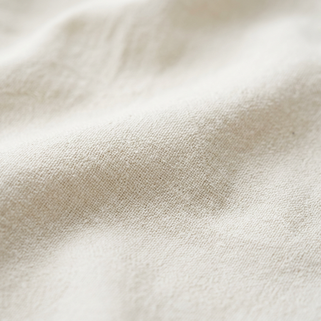
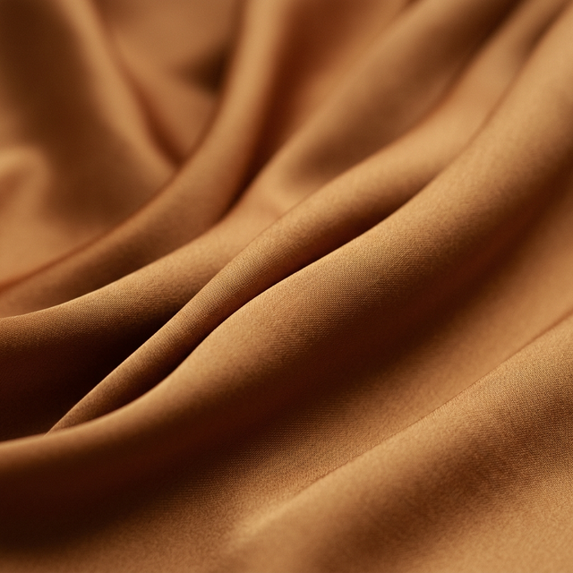
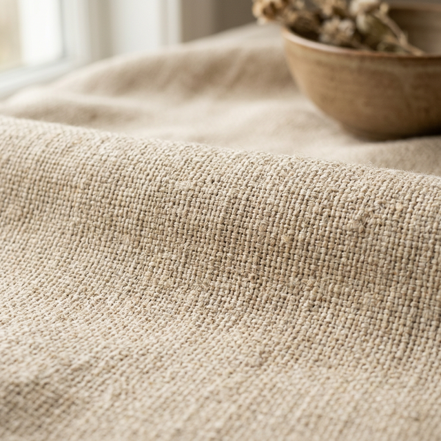
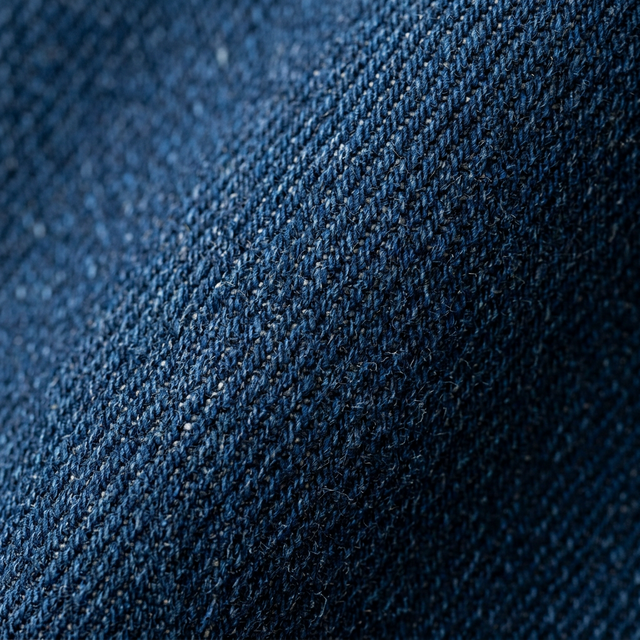
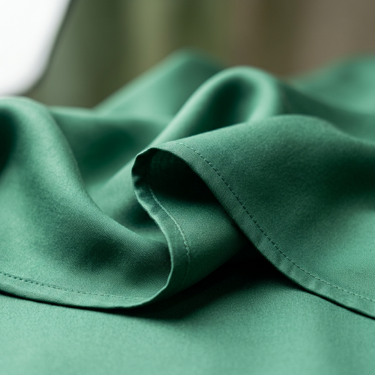
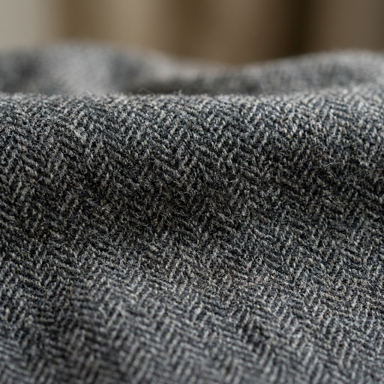

Discover the high-quality materials we use to craft unparalleled garments for the world's leading brands. Our commitment to quality begins with the very fibers we select.

Our cottons are sourced from the finest ethical farms around the world. We offer a wide variety of weights and weaves, including crisp poplin, soft jersey, sturdy twill, and luxurious Egyptian cotton. Perfect for both casual wear and formal shirting, our cottons provide a superior canvas for your designs.

Elevate your collections with our premium pure silks. Known for their incredible drape, natural sheen, and hypoallergenic properties, our silk fabrics are ideal for formal wear, blouses, and high-end evening collections. We handle silk with the utmost care in our specialized units.

Our European-sourced linens offer the ultimate in breathability and relaxed elegance. Sustainable by nature, the flax plant uses significantly less water to grow and the resulting fabric is completely biodegradable. Essential for summer collections, resort wear, and relaxed tailoring.

We source heavy-duty and stretch denim varieties built for durability and style. Our manufacturing facilities are equipped with specialized washing, distressing, and finishing capabilities to achieve the exact look and feel your brand requires, from raw selvedge to vintage stonewashes.

Offering a silk-like feel with incredible drape, our viscose and rayon fabrics are perfect for flowy dresses, blouses, and comfortable everyday wear. We prioritize sourcing from responsibly managed forests to ensure our cellulosic fibers are sustainable from seed to garment.

For structured outerwear, suiting, and warm winter garments, our wool blends offer the perfect combination of warmth, structure, and refinement. From classic tweeds to fine worsted wools, we provide the right materials for premium tailored collections.
Our sourcing network extends globally, allowing us to procure almost any textile requirement, including sustainable synthetics, wool blends, and specialized activewear knits.
Contact Our Sourcing Team